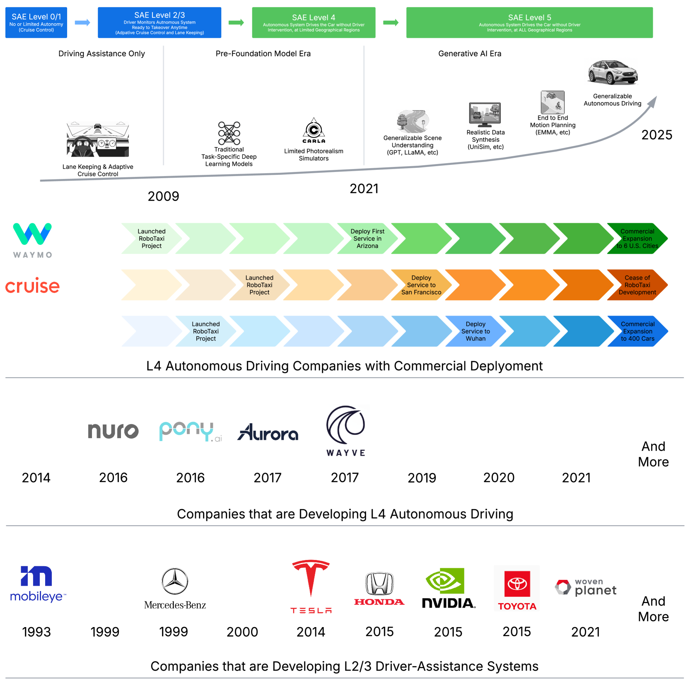

生成AI（GenAI）はコンテンツ生成、推論、計画、マルチモーダル理解における卓越した能力によって産業を再構成する変革的な技術の波を構成している。この革命的な力は、自動運転という工学における最大の課題の一つ、特にLevel 5自律性の追求を解決するための最も有望な道筋を提供する。本サーベイは、自動運転スタック全体にわたるGenAIの新興的役割の包括的かつ批判的な統合を提供する。現代の生成モデリングの原則とトレードオフを概説し、VAE、GAN、拡散モデル、大規模言語モデル（LLM）を対象とする。次に、画像、LiDAR、軌跡、占有、動画生成、およびLLMガイドの推論と意思決定におけるフロンティアアプリケーションを整理する。合成データワークフロー、エンドツーエンド走行戦略、高忠実度デジタルツインシステム、スマート交通ネットワーク、具現化AIへのクロスドメイン転用などの実用的なアプリケーションを分類する。さらに、まれなケースにわたる包括的汎化、評価と安全確認、予算制限の実装、規制遵守、倫理的懸念、環境への影響などの主要な障害と可能性を特定する。
自動運転は長い間、道路安全、モビリティ、物流効率に大きな影響を与えることで交通を革命的に変える変革的技術として構想されてきた。Goldman Sachsの予測によれば、2030年までに世界の新車販売の12%以上がSAEレベル3以上の自動化に達し、潜在的に完全自律性の達成に先駆けてマルチビリオンドルのロボタクシー市場を立ち上げる可能性がある。
現代の自動運転車は通常、高解像度カメラ、LiDAR（回転式と固体式の両方）、レーダー、IMU、GNSS/GPSなどのセンサー群を装備している。これらのセンサーは動的な周囲環境に関する様々なデータを提供する。
しかし、現在の自動運転パラダイムは根本的な技術的障壁に直面している：
これらの根本的な限界が、より強力で適応可能なAIアーキテクチャへの根本的なシフトの必要性を示唆しており、生成AIがその答えとして注目されている。
本サーベイはいくつかの関連研究と区別される：
自動運転における生成モデリングは、知覚・行動予測・計画のためのモデルを訓練・評価するための多様で大規模なデータセットを必要とする。主要なデータセット30以上を実世界と合成に分類して紹介する。
単一車両データセットは通常、単一の自動運転車（自車）から収集されたセンサーデータを提供する。物体検出、追跡、シーン理解などの知覚タスクに焦点を当てる。代表的なデータセット：
マルチエージェントデータセットは時間をかけて複数の道路利用者（車両、歩行者など）の行動を捉え、軌跡予測・モーション計画・インタラクションのシミュレーションをサポートする。
合成データセットはCARLAなどのビデオゲームやシミュレーターによって生成され、完全にアノテーションされたデータと制御可能な多様性を提供する。これらは生成モデリングにおけるデータ合成とドメイン適応に不可欠で、まれなシナリオ（雨、事故など）を補完するGAN訓練に使用される。
2018年にBDD-Xが自動運転向け言語アノテーションデータセットのパイオニアとなった。2023年以降、自然言語理解と自動運転知覚を統合するためのマルチモーダルデータセットが多数導入されている：
このセクションでは、自動運転で使用される主要な生成モデルの基礎を提供する。
VAEはデータの潜在表現を学習するエンコーダ-デコーダアーキテクチャである。エンコーダは入力を潜在空間の確率分布にマッピングし、デコーダはそこからデータを再構築する。自動運転での主な応用：
GANは生成器と識別器の2つのネットワーク間の対抗学習に基づく。自動運転での主な応用：
拡散モデルはランダムノイズを反復的にデノイズすることでデータを合成する生成モデルのファミリーである。2つの主要なプロセスで構成される：
拡散モデルの堅牢性と柔軟性により、現実性と多様性が重要な自動運転シーン生成に特に魅力的となっている。
NeRFは疎な2D画像セットから複雑な3D構造の高品質レンダリングを可能にするニューラルネットワークベースの3Dシーン表現手法である。視点の視野方向から発するレイをニューラルネットワークでモデル化し、光がシーンとどのように相互作用するかをシミュレートする。自動運転での応用：
3DGSはNeRFとは異なり、ニューラルネットワークではなく3Dガウシアン基本形の直接コレクションを使用してシーンを表現する。各ガウシアンは位置（中心点μ）、形状と方向（共分散行列Σ）、色属性（RGB値）によって定義される。NeRFと比較した主な利点は、忠実度と計算効率のバランスが良いことで、リアルタイム自動運転シーン生成に特に有望。
SMPLモデルは自動運転知覚とシミュレーションにおけるリアルな歩行者モデリングに不可欠なパラメトリックな人体表現である。テンプレートメッシュと線形ブレンドスキニング（LBS）を統合して体型と姿勢の分節を制御する。自動運転シミュレーションでは、歩行者の3D Gaussian Splattingの初期化とリアルな人体挙動のモデリングに使用される。
自己回帰モデルでは出力がシーケンスとして定式化され、訓練された同じモデルが前のすべての要素に条件付けられて新しい要素を逐次生成する。代表的な手法：
このセクションでは、生成AIを活用する自動運転研究について、タスクモダリティ別に詳述する。
画像生成は生成AIの重要な分野であり、自動運転固有の要件がある：生成された画像はフォトリアリスティックなだけでなく物理的にも妥当でなければならず、走行シナリオは複数の異種参加者から成る階層的に複雑な環境を含み、実際の走行シナリオはロングテール分布を示し、安全クリティカルシナリオはまれな少数例である。
これらの課題に対処するアプローチ：
LiDAR点群生成は、知覚・シミュレーション・システム検証などの重要なタスクを直接サポートするため、自動運転のための生成AIの進歩における重要なコンポーネントである。課題として：
最新の生成AIアプローチ：拡散モデル（ノイズベース表現を反復的に洗練）、NeRFとニューラル暗黙表現、およびTransformerベースアーキテクチャが主要な手法として登場している。
軌跡生成はエージェント（車両、歩行者など）のモーションシーケンスを合成するタスクで、自律移動の基盤となる。伝統的な方法が不確実性・マルチエージェントインタラクション・リアルタイム適応性に限界を示すため、生成AIへのパラダイムシフトが起きている。生成モデルはマルチモーダルで文脈考慮の軌跡をモデル化しながら安全・効率・物理的または社会的制約への準拠のバランスをとる。
主要な生成的手法：
3D占有生成は研究者が訓練や品質測定に使用できる真値の占有グリッドが存在しないという固有の課題がある。研究は主に占有生成（過去のものから将来フレーム占有グリッドを予測）と占有予測（テキストや画像などの条件から現在または将来の占有グリッドを生成）の2つの主要研究領域に分かれる。
代表的な手法：
動画は自車からのシーンの主流表現の一つである。走行シナリオでの動画生成アプローチが維持すべき特徴：
既存アプローチは方法論的観点から：空間・時間アテンションによる一貫性、BEVマップやHD地図などの構造情報による交通フロー、および多様な条件（テキスト、深度、カメラポーズ、走行行動など）に基づく制御を実現する。タスク観点では、走行動画生成、クローズドループシミュレーション、言語説明可能動画生成の3種類がある。
走行シーンでは3D幾何学的正確さが重要であり、多くのシーン生成アプローチは点群、NeRF、3D Gaussianなどの3D表現を活用して直接3D構造学習を導入する。
シーン編集は自動運転の新興だが比較的未探索の領域である。画像編集と3D編集の2つの主要なタスク方向があり、シーン内のオブジェクトをシームレスに追加・削除・修正することで生データを操作する。これによりまれなエッジケースの生成と知覚モデルのデータ多様性の向上が可能になる。
強力なLLMの出現はマルチラウンドチャット、命令追従、推論の分野を革命的に変えてきた。自動運転においてLLMはリアルタイムセンサーや複雑な走行シナリオからの多様なデータを処理することで意思決定の強化、安全性の向上、先進的なドライバー支援システムの採用加速を実現できる。
CLIPなどのビジョンエンコーダを統合することで、LLMの強力な能力を視覚ドメインに拡張できる。ビジョンエンコーダは画像パッチをトークンに変換してテキストトークン埋め込みと整合させ、統一されたマルチモーダル理解を実現する。これによりMLLM（マルチモーダルLLM）はテキストと視覚入力の両方を処理・推論でき、VQA（視覚的質問応答）と画像キャプショニングなどのタスクをサポートする。
合成データ生成は自動運転システムの開発と検証における重要なコンポーネントとなっている。危険または困難な状況を含む様々な走行シナリオをシミュレートすることで、実世界データ収集では捉えることが難しい状況をカバーする。自動運転向け合成データ生成の進化：
エンドツーエンド走行は、センサーデータと自車状態から計画軌跡および/または低レベル制御行動を直接生成する新興の深層学習手法である。従来のパラダイム（知覚・予測・計画などのコンポーネントをシリアルに接続）とは異なり、エンドツーエンドシステムは完全に微分可能で、より総合的なデータフローを可能にし、従来パラダイムで生じる複合エラーを低減する。生成AIはこの新興分野で重要な役割を果たしている。
自動運転産業は人間中心のシステムへの進化を経験しており、車両自動化は従来の安全・効率指標を超えて個別化された走行体験を提供するようになってきた。生成AI、特にLLMとVLMは個別化・人間中心の自動運転設計に重要な貢献をしている：
自動運転は訓練と検証のための大量の多様な高品質データを必要とする。さらに、強化学習の研究がインタラクティブなクローズドループシミュレーションへの関心を高めており、Sim2RealとReal2Sim転移フレームワークへのさらなる研究を正当化している。生成AIはデジタルツインをいくつかの重要な方法で強化する：
マルチモーダルLLM（MLLM）によるシーン理解は、マルチモーダル推論を通じた複雑な交通シナリオ解釈のための統合フレームワークを提供する有望なフロンティアとして自動運転で登場している。代表的な研究：
生成AIの進歩が知的交通システム（ITS）の広域ドメインとどのように交差するかを文脈化することも重要である。GenAIはITSにおいて以下を提供する：
自動運転のための生成AIは具現化AI（物理世界と相互作用するAI）という広域分野とますます交差している。自動運転車とロボットの境界は主に意味論的なものである。最近のトレンドは技術の収束を示している：ロボティクス向けに開発されたVLA（Vision-Language-Action）モデルと大規模マルチモーダルモデルが走行に適応され、その逆も起きている。
基盤モデルと具現化AIの収束を系統的に検討した研究が増加している。基盤モデルをロボティクスに統合すること、VLAフレームワークの開発、産業での実用応用の3つのテーマ方向に分類される。代表的な研究として、OpenVLA（実世界ロボットデモンストレーション70万件で訓練された7Bパラメータモデル）、RT-2（インターネットスケール訓練でロボット操作と言語理解を結合）などが挙げられる。
具現化AIシステムでは、異なるセンサーモダリティが知覚とインタラクションの補完的側面に貢献する：
汎用ロボットエージェントの追求は、LLM・VLM・拡散ベースの行動生成器の進歩からますます引き出されている。これらのモデルは知覚・推論・制御を共通フレームワークに統一し、ロボットが多様なセンサー観測から意味のある行動に直接マッピングできるようにする。
ロボティクスと具現化AIにおける悪名高い課題はSim2Realギャップである。最近の生成モデリングの進歩がこのギャップに複数の次元で対処し始めている：視覚観察ギャップの橋渡し、動的ミスマッチの解消、タスク多様性の不足への対応。
生成AIは具現化エージェント内のモデルを改善するだけでなく、訓練データの合成と多様化の方法も革新している。ROSIE（ロボット学習のための意味論的に想像された体験）のような代表的な例は、拡散モデルとLLMを活用して既存のシーン画像に新しいオブジェクトやディストラクターをインペイントすることでロボットデータセットを意味論的に拡張する。
エンドツーエンド自動運転と生成AIの本格的な進展には、ロングテールシナリオを含む多様なデータセットとベンチマークの充実が不可欠である。既存のデータセットはまれなイベントや地理的多様性に欠けており、評価指標の標準化も課題として残っている。
エンドツーエンド自動運転の前進には2つのコアの柱を強化する必要がある：堅牢な視覚表現モデルと強力なマルチモーダル推論モデル。自己教師あり表現学習（SSRL）と大規模推論モデル（LRM）訓練の理論的・アルゴリズム的基盤を発展させることが重要。
デジタルツインは自動運転研究開発において不可欠となっている。生成AIはReal2Sim2Real転移学習とクローズドループテストを実現することでデジタルツインの力を大幅に強化する。インタラクティブな訓練のためのクローズドループ生成シミュレーションが新たな方向性として注目されている。城規模のデジタルツインへの発展も長期的な目標である。
自動運転車がますます接続されるにつれ、生成AIはV2X協調の強化に新たな機会を提供する：
生成AIはシナリオ生成と交通予測分析を通じて自動運転の交通運営を変革し、安全と効率を強化している。動的な交通パターンと行動の予測を通じ、適応的な意思決定プロセスを支援する。
交通計画は自動運転と生成AIによって形成される新たな時代に入っている。交通計画者はGenAIのデータ駆動型洞察とシミュレーションを活用して次世代交通ネットワークの複雑な意思決定を支援できる。
自動運転は日常生活の様々な側面を変革することで重大な社会経済的影響を持つ。生成AIは実際の自動運転データがなくても、様々な仮定と条件下でのシナリオベース予測を通じて自動運転採用の社会経済的影響を評価するための実用的なツールを提供する。
自動運転と生成AIには複雑な環境トレードオフがある。メリットとして：自動運転車は渋滞と停車を減らすよう最適にルーティングでき、デジタルツインが実際のテストドライブの必要性を低減し、電気自動車との組み合わせで排出量を削減できる。一方、大規模生成モデルの訓練にはエネルギー集約型コンピューターが必要で、オンボードコンピューターも継続的に電力を消費する。グリーンAI実践（エネルギー効率的アルゴリズム、専用ハードウェア、再生可能エネルギーでの訓練）が求められる。
生成AIモデルの信頼性確保は安全クリティカルな走行タスクへの応用で最重要課題である：
連合学習（FL）は分散学習を可能にして生データを共有せずにグローバルモデルを協調訓練することで、自動運転の課題（分散データ、プライバシー懸念、データセキュリティ）に対する実行可能なソリューションを提供する。連合学習と生成AI（FedGenAI）の組み合わせにより、合成知覚データ・交通シナリオ・複雑なインタラクションを生成して実世界データ不足を大幅に軽減する可能性がある。
自動運転車への生成AI技術のデプロイは重要な研究トピックとなっている。主な課題：
自動運転への生成AIのデプロイは深遠な倫理的問題を提起する：
自動運転における生成AIは人間を置き換えるのではなく、設計・テスト段階とリアルタイム操作の両方で人間とAIの協調の可能性を開く：
自動運転と強力な生成AI技術の進歩は、交通研究を超えた都市研究と地理学の新しいフロンティアを開いている。生成AIは都市形態のシミュレーション、デジタル「世界シミュレーター」としての実世界変換、地理情報の収集と分析の新パラダイムを可能にする。
走行のための生成AIの多くの概念は自律ドローンと低高度エアモビリティに自然に拡張される。生成モデルはドローンに複雑な3D軌跡と環境要因を予測するための支援を提供でき、マイクロ気象パターンのシミュレーション、Real2Sim2Realの探索、低高度経済での交通管理と衝突回避などに応用できる。
自動運転はナビゲーションと安全を超えた個別化された健康サポート・感情的エンゲージメント・医療アクセシビリティに向けて進化している。GenAIはこれらの新たな機能を可能にし、自動運転車を高齢者・障害者・緊急医療シナリオのための能動的な医療パートナーに変えることができる。
災害シナリオは予測不可能性・ダイナミズム・規模のために極端な課題をもたらす。GenAIは厚煙・激しい洪水・構造的瓦礫・凍結路面条件などのまれな・危険な条件の現実的・多様なデータセットを合成することで重要なギャップを橋渡しできる。また、LLMを通じた意思決定能力の強化、避難計画シミュレーション、複数ロボットユニットの動的調整にも活用できる。
GenAI搭載自律システムは多くのドメインにわたる深遠な恩恵を約束するが、公共の認識・規制の不確実性・経済的不平等の可能性の増大・複雑な人間要因に関連する重大な社会的リスクも必要性を認識する必要がある。自律走行による交通渋滞の解消・排出量削減・事故低減などのメリットと、技術格差・労働市場への影響などのリスクのバランスを慎重に評価する必要がある。
生成基盤モデルは自動運転の再定義の最前線にあり、データ駆動型イノベーションが知覚・計画・シミュレーション・評価にわたって車両自律性を大幅に強化する時代を告げている。本サーベイはVAE、GAN、拡散モデル、NeRF、3DGS、マルチモーダルLLMを含む生成アーキテクチャの変革的可能性を体系的に統合し、現実的なセンサーデータの合成・複雑な交通シナリオの予測・人間に整合した意思決定の実現におけるそれらの役割を明確にした。
生成モデルは単に自動運転能力を改善するだけでなく、自律システムの概念化・開発・検証の方法を根本的に変える。高忠実度の合成データ生成と洗練されたデジタルツインを通じて、「ロングテール」のまれな・危険な・予測不可能なシナリオという重大な課題に対処する力を与える。この変革は技術的領域を超え、自律走行車が積極的に都市モビリティを強化し、環境持続可能性を促進し、交通関連の死者を大幅に削減する未来を育む。
しかし、完全に統合された信頼性の高い倫理的に健全な自律モビリティへの道は依然として重大な障壁を示している。主要な課題として、リアルタイムデプロイに必要な計算効率・多様で動的な条件での堅牢な汎化・安全クリティカルな評価のための標準化ベンチマークの開発が挙げられる。技術的課題に加え、生成的自律システムの社会的採用の成功は、公的信頼を鼓舞し維持する透明で説明可能なフレームワークの確立にかかっている。最終的に、自動運転への生成AIの統合の成功は、技術的進歩を公平性・説明責任・人間の尊厳の原則と整合させる集合的能力に依存する。